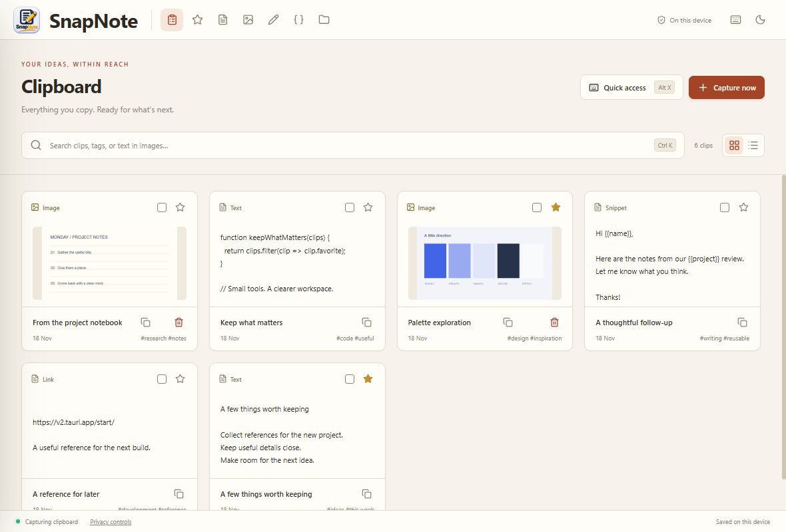
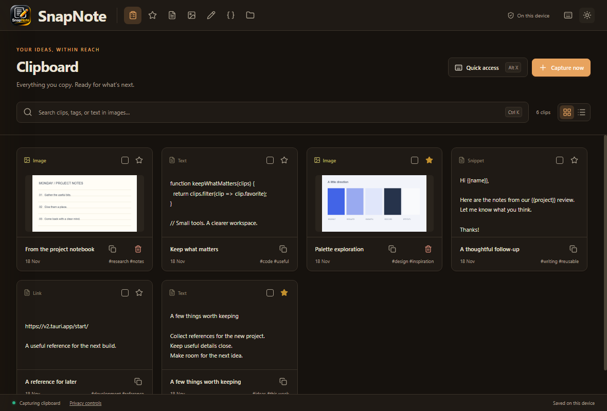

Clipboard history
Every text and image you copy is captured, deduplicated and indexed — searchable by title, content and tags, with a history size you control.
Free clipboard manager for Windows 10 & 11
SnapNote remembers your clipboard history, notes, snippets and images in one private Windows workspace. Press Alt+X anywhere to find any of it in a second — no account, no cloud, no telemetry.

What's inside
A clipboard that remembers, notes that stay organized, and tools for the images and text you keep reusing.
Every text and image you copy is captured, deduplicated and indexed — searchable by title, content and tags, with a history size you control.
One shortcut opens a compact search window above whatever you are doing. Press it again to hide it. It works from the system tray even with the app closed.
Headings, lists, tasks, code blocks, undo and redo — with image paste and a full editing history. Existing notes migrate automatically.
Turn recurring replies into templates with
{{variables}}. Copying fills in the blanks and
leaves the original untouched.
Crop and annotate screenshots, pin images above other windows, and extract their text with local OCR so it becomes searchable.
Group research into sessions, park projects in folders and star what keeps coming back. Multi-select copies several clips at once.
Lock the workspace with AES-256-GCM and PBKDF2. The password exists only in your head — instant lock whenever you step away.
Export everything to a single backup file — optionally password-protected — and restore it on any machine.

One keystroke, everywhere
Quick access opens as a small floating window right above your current work. Search your recent clips, hit Enter to copy, and the window gets out of the way.
Close the app window and SnapNote waits quietly in the system tray — Alt+X keeps working from anywhere in Windows.
The real interface
Captured from the running app — no mockups. Light and dark themes included.

Privacy, in plain words
SnapNote makes no account, cloud or telemetry requests — there is no server to talk to. Your history lives in transactional local storage inside the app's own device profile, and the app works fully offline.
Turn on the vault and the workspace is rewritten with AES-256-GCM and PBKDF2-SHA256. Backups can carry their own password, so a copy in your bag stays a secret.
Read the desktop guideReady when you are
Free for Windows 10 and 11 (x64). The installers are self-contained — no extra runtimes needed — and every release is built and tested by an automated Windows pipeline.
SHA-256 checksums are published with every release. Builds are unsigned, so SmartScreen may ask for confirmation the first time.
Questions and answers
No. Since v1.4.2 the Windows build statically links the C runtime, so the installer works on a clean Windows 10 or 11 machine out of the box. The only optional extra is the Tesseract engine, which enables text recognition inside images.
Everything lives in local transactional storage inside the app's own profile on your device. There is no sync, no server and no analytics. Backups are exported only when you ask for them.
Yes. With the window closed, SnapNote keeps running in the system tray and Alt+X brings quick access back. If you choose Quit from the tray menu, the shortcut rests until you start SnapNote again.
Yes, with local OCR. Install Tesseract once and add it to PATH; SnapNote then extracts text from images so it becomes searchable. Recognition runs on your machine — images are never uploaded.
Yes. On first launch your original rich-text notes migrate into the new store, and a recovery copy of the old records is kept. Storage problems are surfaced in the app instead of being silently swallowed.
SnapNote is built and validated end to end on Windows 10 and 11. The codebase is Tauri-based, but Windows is the platform the releases currently target.